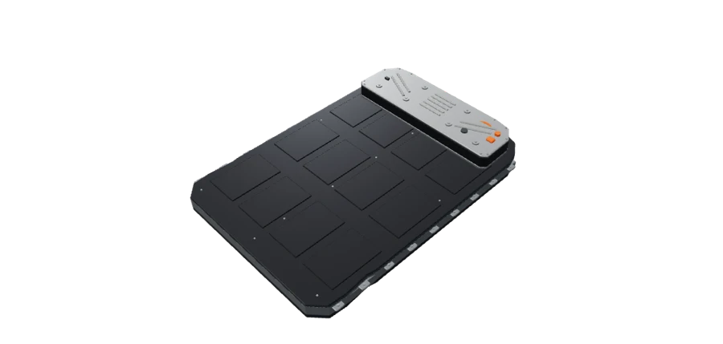
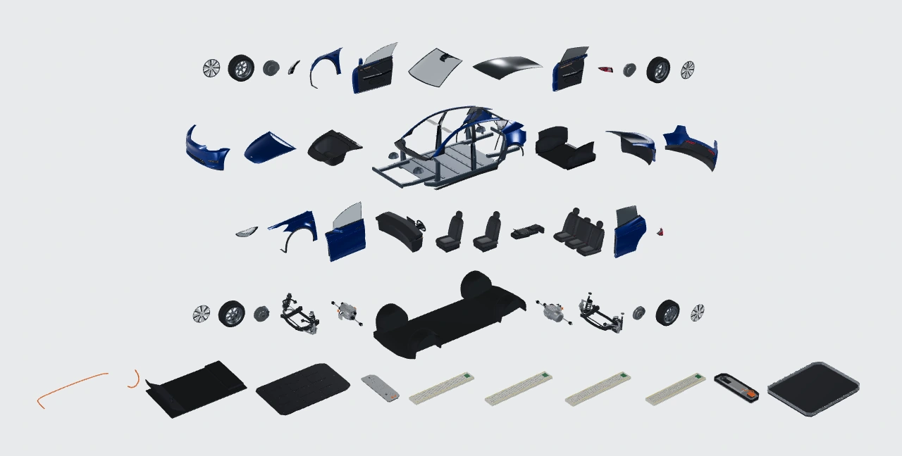
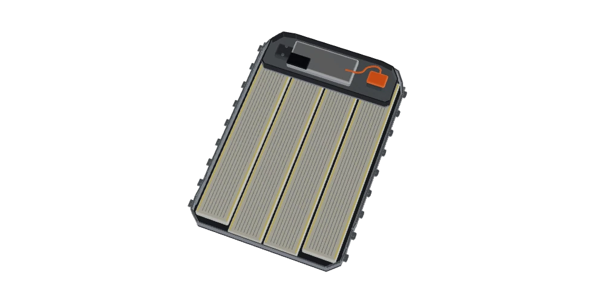
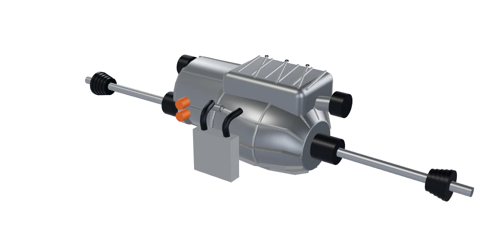
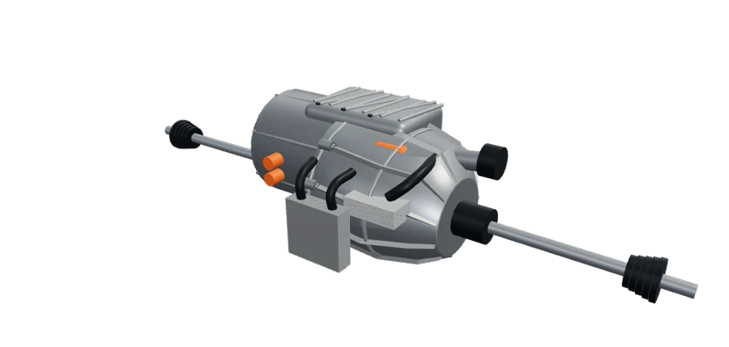
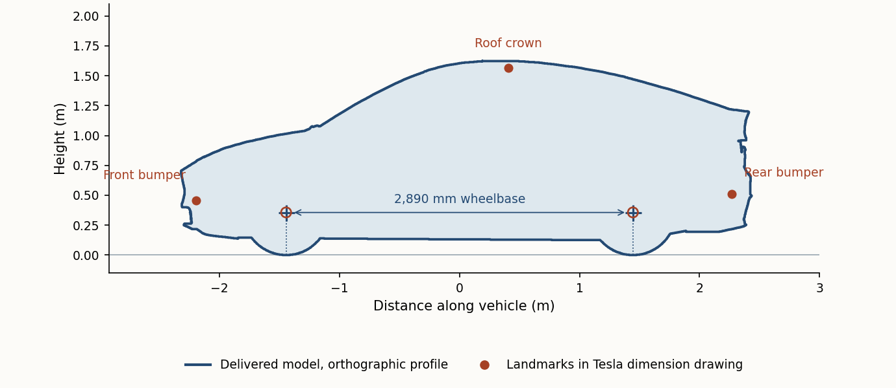

Battery enclosure


The tapered corners, side flanges and raised rear electronics bay follow the plan view. The model’s length-to-width ratio is 1.45. The drawing gives approximately 1.46.
Earlier model study · Current photo comparisons
2023 Model Y Long Range AWD · Deep Blue Metallic · 19-inch Gemini wheels
Match in 3D · Original reference · Full-size render
The 30 matched views include five Tesla configurator images, seven owner photographs of a blue Long Range, one dealer front-quarter view, eight views of a five-seat Georgia car and nine close-ups of another Deep Blue Metallic car. The Georgia car supplies five independent exterior angles and three cabin views. It wears Midnight Silver Metallic. The blue owner car has the seven-seat option. Three identical configurator aliases are listed in the index. Five-seat Georgia gallery · IQautos close-ups · Blue owner car · Gravity Autos · Tesla paint and wheel codes
Each comparison uses the reference image’s full pixel dimensions. Fourteen exterior views measure the distance between the photographed and rendered outlines in both directions. Four lamp close-ups and a Gemini cover view use the component perimeter to fit the camera. The cabin, open compartments and charge-port views use visual alignment. Each frame records what the photograph can establish. Shadows, wheel rotation and camera perspective affect the comparisons. Photograph index, dimensions and technical sources
The drawing separates 51 full-scale assemblies. Follow the four doors and glass back to the body shell, trace the wheels and suspension to each axle, or inspect the four battery modules with the tray and both covers removed. Select a system or click a component to bring it close. The four wheels, four brakes and both electric drive units open a second time. Use the Component menu to inspect a tire, caliper, inverter or halfshaft on its own. Open the exploded drawing

The wheel covers lift off seven-split-spoke alloys. The front suspension uses an upper wishbone, lower links and coil-over damper. At the rear the spring and damper occupy separate positions. Tesla service illustrations establish their arrangement. Casting surfaces, fasteners and hidden mounts are reconstructed from the available views. Tesla Gemini cover · Original 19-inch alloy wheel · Front suspension · Rear spring
This U.S. Long Range AWD reconstruction represents the non-structural 2170 battery configuration. The front axle uses an induction motor and the rear axle a permanent-magnet synchronous motor, each with fixed reduction. Tesla documents the pack architecture and service interfaces. The independent teardown examined two 2022 Model Ys and supplies the carryover reference for the four modules and rear electronics bay. Individual cells, pack capacity, serial-specific castings and cable routing remain outside the verified geometry. Tesla pack configurations · Tesla motor specifications · 2023 EPA certification application · INL and Munro teardown, Figures 9 and 10 · Open electric drivetrain

The tapered corners, side flanges and raised rear electronics bay follow the plan view. The model’s length-to-width ratio is 1.45. The drawing gives approximately 1.46.


Four longitudinal modules occupy the lower tray. The outboard pair is shorter. The light module covers, longitudinal ribs, insulation strips and separate rear bay follow the INL teardown.
Inspect in 3D · Open Tesla reference · Teardown photographs of all four modules


The ribbed reduction casting sits beside the motor. A plate heat exchanger and high-voltage inlet sit on the outside. The two halfshafts extend to the front wheel centers.


The rear motor and offset differential sit between the halfshafts. The service photograph shows the 3DU-family assembly on its subframe. The viewer isolates the drive and shafts.
The wheel centers establish the wheelbase and track. Length, mirror width and height were measured independently on the assembled export. All figures are in millimeters. Tesla dimensions and diagram · 2023 U.S. owner’s manual, dimension drawing
| Measurement | Tesla | Model |
|---|---|---|
| Length | 4,751 | 4,754 |
| Width across mirrors | 2,129 | 2,125 |
| Overall height | 1,624 | 1,624 |
| Wheelbase | 2,890 | 2,890 |
| Track at wheel centers | 1,636 | 1,636 |
The side-view hubs are about 296 pixels apart in Tesla’s 760-pixel drawing. Scaling that span to the documented 2,890 mm wheelbase puts the drawn bumper tips about 4.47 m apart. The model uses the printed 4.751 m specification. Factory drawing

The body surfaces, glazing, lamp geometry and brakes derive from the independently authored “Tesla Model Y 2021” by 763468712, licensed under CC BY 4.0. The 2023 adaptation adds the silver Gemini covers and alloys, fitted closures and lamp optics, five-seat upholstery, dashboard and interior trim, cargo compartments, underbody, suspension and electric drivetrain. The Blender master retains the component meshes and hinge pivots. Studio reflections use Poly Haven’s Studio Small 08. Original mesh and author · CC BY 4.0 · Studio Small 08, CC0
Download this earlier Blender study · Download GLB · Saved cameras and assembly settings